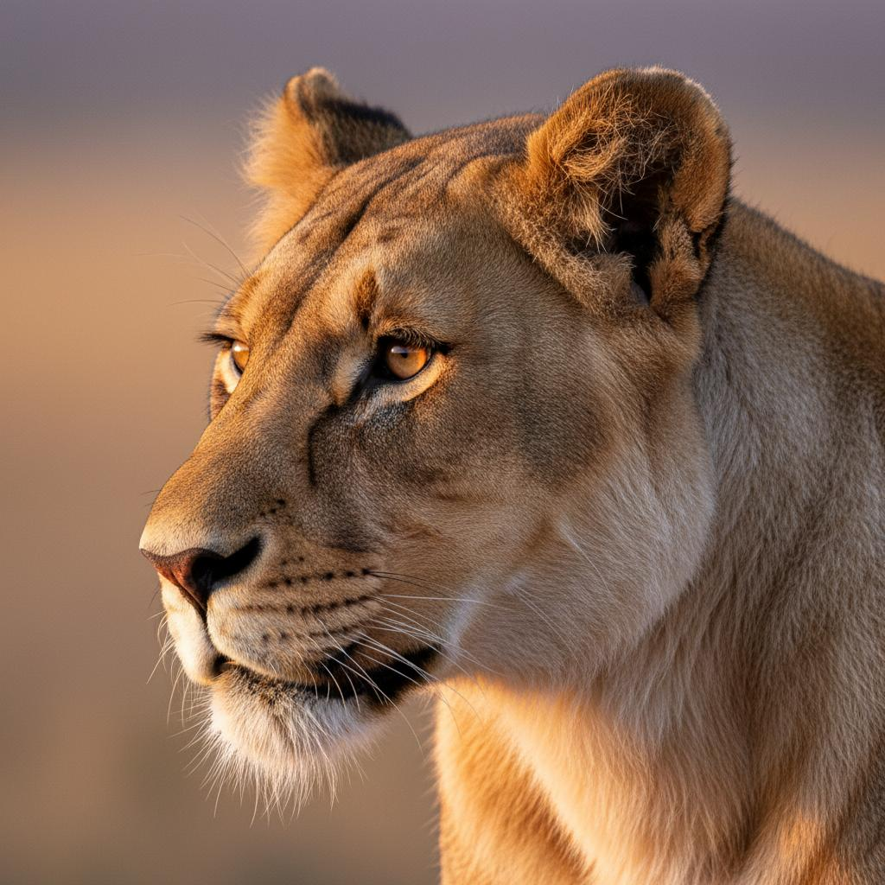

Life of a Lion

The lion, known as the "King of the Jungle," is one of the most iconic and majestic creatures on Earth. Despite their royal title, lions actually inhabit grasslands and savannas rather than jungles. These magnificent big cats are the second-largest living cats after tigers, with male lions weighing up to 550 pounds and measuring over 8 feet in length, excluding their impressive manes that can add another 12 inches to their appearance.
Lions are unique among big cats for their social behavior. They live in groups called prides, which typically consist of related females, their cubs, and a small number of adult males. Female lions, or lionesses, are the primary hunters of the pride, working together in coordinated groups to take down prey such as zebras, wildebeest, and buffalo. Their teamwork and strategic hunting techniques make them highly successful predators, with a success rate of about 30% per hunt.
The male lion's most distinctive feature is his magnificent mane, which serves multiple purposes. The mane protects the male's neck during fights with rival males, and its size and coloration signal health and strength to potential mates. Darker, fuller manes are generally more attractive to lionesses. Male lions defend their pride's territory, which can span up to 100 square miles, marking boundaries with scent markings and roaring to warn intruders.
Lion cubs are born blind and helpless, weighing only about 3 pounds at birth. They begin to open their eyes after about a week and are weaned at around 6 months. Unfortunately, cub mortality is high, with only about 1 in 8 cubs surviving to adulthood due to predation, starvation, and infanticide by rival males. Those that do survive learn essential hunting skills by observing and participating in group hunts with the pride, gradually developing the skills needed to survive in the wild.